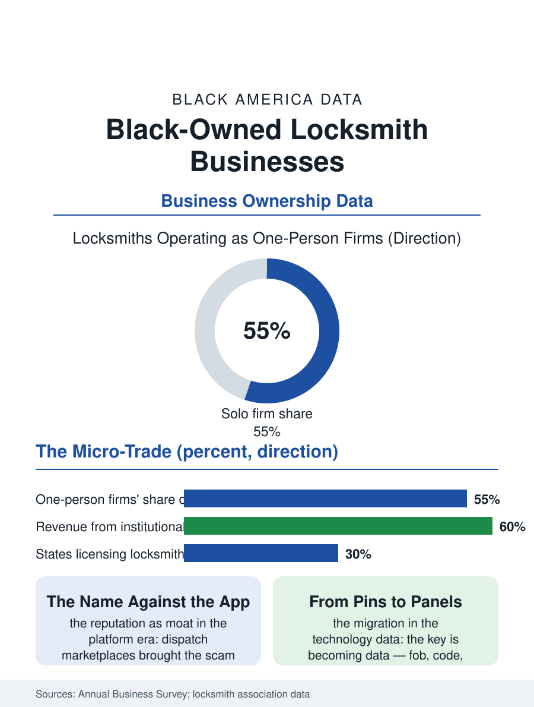

Black Business
The Threshold Keeper: Black-Owned Locksmiths
The trades' smallest proprietor keeps the community's thresholds, defending the licensed name against the platform's scam crews. The locksmith file.

The locksmith is the trades' smallest proprietor, often a one-person firm with a van and a drill, and the trade's Black ownership descends from the blacksmith's and the mechanic's line, the metal trades' oldest self-employment. The business census folds the locksmiths into the services categories in the thousands of mostly micro firms. This article reads the locksmith file.
The Van and the License
The trade's economics are the emergency's, as the plumbing file's are: the lockout at midnight, the eviction's court-ordered rekey, the landlord's turnover between the tenants, the safe's forgotten combination, a demand curve of small urgencies whose pricing power is the hour and the desperation, moderated by the platform era's dispatch marketplaces, whose lead fees and whose scam operators, the unlicensed bait-and-switch crews whose tactics the trade associations campaign against, have made the licensed local locksmith's reputation the trade's central asset and its defense. The licensing map is a patchwork, a minority of states and cities licensing the trade at all, a fact that shapes the file: where the license exists it is the proprietor's moat and marketing, where it does not the guild is the association's certification, the master locksmith's credential earned in the safe and institutional specializations where the trade's real margins live, the hospital's and the university's key systems, the bank's vault work, the access control's electronic frontier into which the trade is migrating as the mechanical lock yields to the credential and the phone. The roadside era gave the trade its second classic call, the locked car at the rest stop and the trunk with the groceries inside, and the trade's ethics in that moment, the identity checked against the registration before the door is opened, are the profession's small jurisprudence, practiced at the curb in two minutes by the proprietor acting as the law's deputy without the title. The burglary's aftermath is the trade's somber staple, the door rebuilt and the deadbolt upgraded in the same visit that boards the frame, the locksmith arriving as the second responder in the neighborhood's worst week and leaving it more secure than it was before the event, a restoration function the trade performs without advertisement and the customers remember at the next generation's first apartment.
Keys, Codes, and the New Lock
The technology file is the trade's current chapter: the key is becoming data, the fob and the code and the biometric, and the locksmith's skill is migrating from the pin tumbler to the networked panel, a transition the trade's training economy, the manufacturers' certifications and the association's schools, mediates for the established firms while the automotive file rewrites the largest single segment, the car key's transponder and the dealer's programming monopoly having converted the vehicle lockout from the slim jim's minute to the programmer's license fee, a capital and authorization gate the independent's trade groups litigate as the right-to-repair's locksmith chapter. The Black proprietor's position in the file is the micro-trade's general one with the metal trades' history added: the shop's base in the community's landlords and churches and car lots, the reputation carried by word of mouth in the pattern of the corridor files, and the institutional accounts, the property management firms' rekey volume, as the firm's annuity.
The Smallest Firm's Standing
The locksmith file closes on the trade's civic function, which exceeds its receipts: the locksmith is the keeper of the community's thresholds, the professional trusted with the spare key and the safe's combination, called at the eviction's sorrow and the new home's joy in the same week's book, a trust the proprietor's standing must carry entire since the firm is the man. The succession file is the micro-trade's usual, the van and the book sold to the apprentice or retired with the owner, the institutional accounts being the transferable value. The census counts the locksmiths within the repair services' totals, their receipts the file's smallest figures and their density on the corridors among the service map's most even. The file's last entry is the key cut while the customer waits, the blank becoming the particular shape of one household's security in ninety seconds at the counter, a manufacture so small the economy's statistics step over it, performed by the proprietor whose name is the shop's sign and whose hands, in the metal trades' unbroken line from the forge to the key machine, are the firm's entire plant.
More in Black Business
Black-Owned Businesses: Counts, Receipts, and the Representation Gap
About 161,000 Black-owned employer firms and three million solo ventures: how the Census Bureau counts Black business ownership, where firms concentrate, and the gap between population share and business share.
Black Median Net Worth: The Wealth Gap in Federal Reserve Data
The Federal Reserve puts Black median family net worth at $44,900, against $285,000 for White families — about 16 cents on the dollar. The widest gap in economic data.
Black Buying Power: The $1.8 Trillion Consumer Economy
Black buying power is estimated at about $1.8 trillion — larger than the economy of most nations. What the figure measures, who produces it, and what it buys.
Source: U.S. Census Bureau, Annual Business Survey for locksmith services; Associated Locksmiths of America data.